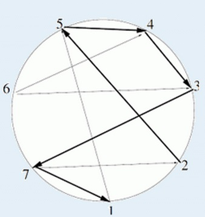

在一个圆环上，有N个地点，这些地点按照逆时针顺序用正整数1..N编号。有些地点间存在直线道路可以到达，但
道路并不是双向的，也就是说如果存在a到b的道路，不一定同时存在b到a的道路。现在你要从某个地点开始，沿着
道路走，每个地点最多被经过一次，并且你走过的道路对应的线段只能在公共端点处相交。但是有时候允许一些特
例，具体说就是你走过的某条道路可以和最初走的道路相交最多一次。
你的任务是求出最多能走过的道路数，并给出一个可行的起点。

| F.A.Qs | Home | Discuss | ProblemSet | Status | Ranklist | Contest | 入门OJ | ModifyUser Xeonacid | Logout | 捐赠本站 |
|---|
第一行一个非负整数，表示最多可以走的道路数。